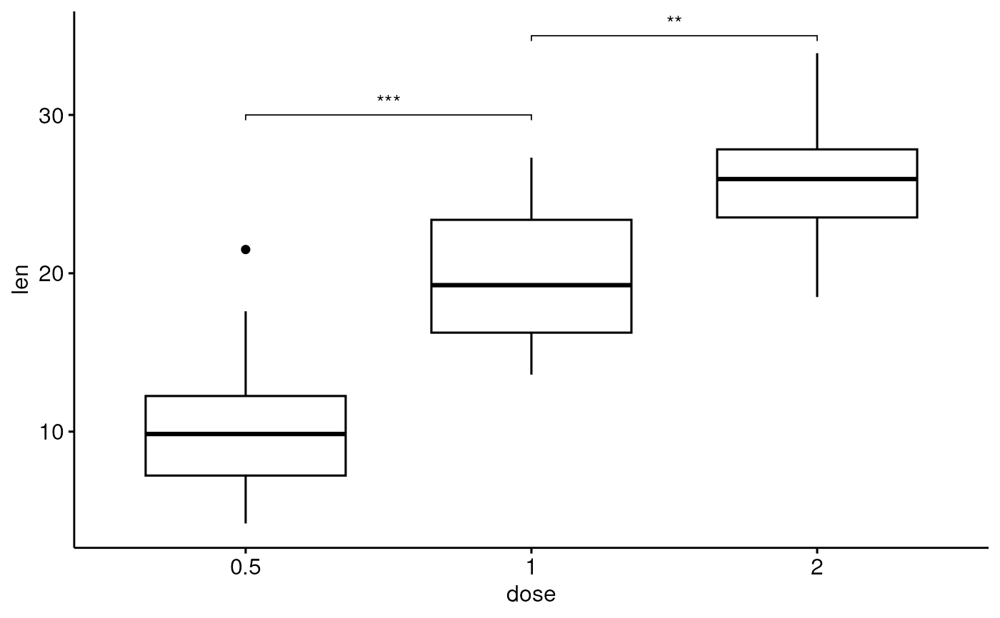
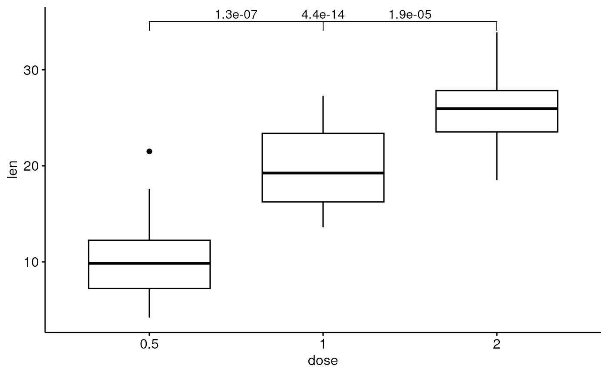
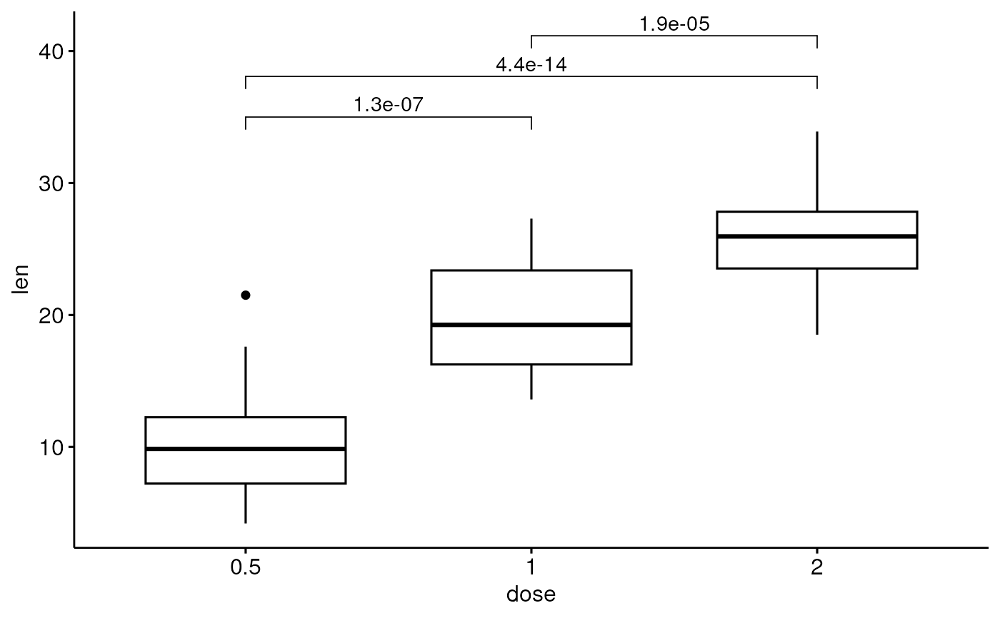

add brackets with label annotation to a ggplot. Helpers for adding p-value or significance levels to a plot.
stat_bracket( mapping = NULL, data = NULL, position = "identity", na.rm = FALSE, show.legend = NA, inherit.aes = TRUE, label = NULL, type = c("text", "expression"), y.position = NULL, xmin = NULL, xmax = NULL, step.increase = 0, step.group.by = NULL, tip.length = 0.03, bracket.nudge.y = 0, bracket.shorten = 0, size = 0.3, label.size = 3.88, family = "", vjust = 0, ... ) geom_bracket( mapping = NULL, data = NULL, stat = "bracket", position = "identity", na.rm = FALSE, show.legend = NA, inherit.aes = TRUE, label = NULL, type = c("text", "expression"), y.position = NULL, xmin = NULL, xmax = NULL, step.increase = 0, step.group.by = NULL, tip.length = 0.03, bracket.nudge.y = 0, bracket.shorten = 0, size = 0.3, label.size = 3.88, family = "", vjust = 0, coord.flip = FALSE, ... )
Arguments
| mapping | Set of aesthetic mappings created by |
|---|---|
| data | The data to be displayed in this layer. There are three options: If A A |
| position | Position adjustment, either as a string, or the result of a call to a position adjustment function. |
| na.rm | If |
| show.legend | logical. Should this layer be included in the legends?
|
| inherit.aes | If |
| label | character vector with alternative label, if not null test is ignored |
| type | the label type. Can be one of "text" and "expression" (for parsing plotmath expression). |
| y.position | numeric vector with the y positions of the brackets |
| xmin | numeric vector with the positions of the left sides of the brackets |
| xmax | numeric vector with the positions of the right sides of the brackets |
| step.increase | numeric vector with the increase in fraction of total height for every additional comparison to minimize overlap. |
| step.group.by | a variable name for grouping brackets before adding step.increase. Useful to group bracket by facet panel. |
| tip.length | numeric vector with the fraction of total height that the bar goes down to indicate the precise column |
| bracket.nudge.y | Vertical adjustment to nudge brackets by. Useful to move up or move down the bracket. If positive value, brackets will be moved up; if negative value, brackets are moved down. |
| bracket.shorten | a small numeric value in [0-1] for shortening the with of bracket. |
| size | change the width of the lines of the bracket |
| label.size | change the size of the label text |
| family | change the font used for the text |
| vjust | move the text up or down relative to the bracket |
| ... | other arguments passed on to |
| stat | The statistical transformation to use on the data for this layer, as a string. |
| coord.flip | logical. If |
Examples
df <- ToothGrowth df$dose <- factor(df$dose) # Add bracket with labels ggboxplot(df, x = "dose", y = "len") + geom_bracket( xmin = "0.5", xmax = "1", y.position = 30, label = "t-test, p < 0.05" )# Customize bracket tip.length tip.length ggboxplot(df, x = "dose", y = "len") + geom_bracket( xmin = "0.5", xmax = "1", y.position = 30, label = "t-test, p < 0.05", tip.length = c(0.2, 0.02) )#Using plotmath expression ggboxplot(df, x = "dose", y = "len") + geom_bracket( xmin = "0.5", xmax = "1", y.position = 30, label = "list(~italic(p)<=0.001)", type = "expression", tip.length = c(0.2, 0.02) )# Specify multiple brackets manually ggboxplot(df, x = "dose", y = "len") + geom_bracket( xmin = c("0.5", "1"), xmax = c("1", "2"), y.position = c(30, 35), label = c("***", "**"), tip.length = 0.01 )# Compute statistical tests and add p-values stat.test <- compare_means(len ~ dose, ToothGrowth, method = "t.test") ggboxplot(df, x = "dose", y = "len") + geom_bracket( aes(xmin = group1, xmax = group2, label = signif(p, 2)), data = stat.test, y.position = 35 )# Increase step length between brackets ggboxplot(df, x = "dose", y = "len") + geom_bracket( aes(xmin = group1, xmax = group2, label = signif(p, 2)), data = stat.test, y.position = 35, step.increase = 0.1 )# Or specify the positions of each comparison ggboxplot(df, x = "dose", y = "len") + geom_bracket( aes(xmin = group1, xmax = group2, label = signif(p, 2)), data = stat.test, y.position = c(32, 35, 38) )